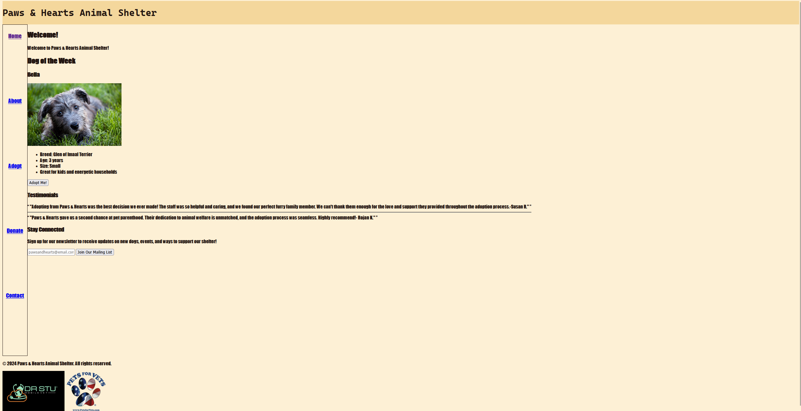

Peer Review 2
Alex Wyatt
Site Screenshot

Evaluation Criteria
-
The link leads to the course page, which contains the project link
-
All file/folder names are lowercased
-
While the page itself has good contrast, the font used makes it hard to read the page. The page uses a custom CSS file for its site colors and fonts. The page has its header nav links positioned vertically along the left side of the screen. The text is too close to the nav box. The related content is grouped up logically.
-
The page has a header, main, footer, and nav
-
There is a branded h1
-
The main does start with an h2
-
There is no tagline
-
The footer doesn't contain the menu for user's pages
-
It follows the specific requirements for the assignment
Overall Thoughts
The site itself contains a lot of features. The dog of the week is cute and innovative. The adopt page with the cards containing information on all of the dogs was well done. There is very little variation however. Outside of the h1, the rest of the site uses the same bold font. The colors used are also the same across the site. The site contains a lot of empty space that could be used to better allign the different elements going on. I would recommend changing the font to something more readable